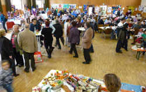
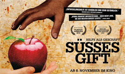
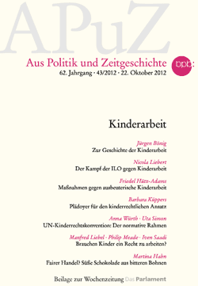
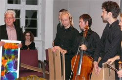

|
Freitag, 30. November 2012 |
Wörtelhalle verwandelt sich in Basar
terre des hommes-Veranstaltung bringt 7.000 Euro Erlös für Schulprojekt in Bolivien |
Pressebericht der BNN vom 13.11.2012 / Text: Anne-Rose Reif
Noch am Freitag�abend hatte sich die Kuppenheimer Wörtelhalle als Konzerthaus präsen�tiert, am Sonntag verwandelte sie sich in einen großen orientalischen Basar. Zu verdanken war dies den vielen helfen�den Händen der terre des hommes Ar�beitsgruppe Murgtal/Mittelbaden, die zu ihrem „32. Herbstbasar" eingeladen hatte.
Nicht ganz so großes Gedränge als in den Vorjahren herrschte in der Wörtel�halle, denn die Konkurrenz der ver�kaufsoffenen Sonntage in den Nachbar�städten war deutlich zu spüren. Den�noch zeigte sich Heinz Wolf, Sprecher der tdh-Arbeitsgruppe, mit dem dies�jährigen Herbstbasar zufrieden: „Dank unserer rund 70 Sponsoren, unseren vie�len Besuchern aus dem Landkreis und unseren vielen ehrenamtlichen Mitar�beitern konnten wir rund 7 000 Euro Er�lös für das Öko-/Schulprojekt Ceiisa in Bolivien erwirtschaften."
Weiterlesen:
|
Dienstag, 27. November 2012 |
20. Bericht zur Wirklichkeit der deutschen Entwicklungspolitik
Etat für Entwicklungshilfe 2013: Kürzungen müssen verhindert werden |
Die Hilfswerke terre des hommes und Welthungerhilfe fordern von den Abgeordneten des Bundestages, in der heutigen Debatte zum Bundeshaushalt 2013 die geplanten Kürzungen im Entwicklungshilfeetat in Höhe von 124 Millionen Euro zurückzunehmen und stattdessen eine Aufstockung des Entwicklungshilfeetats zu beschließen. Die dramatischen Folgen des Klimawandels sowie die Verknappung von Ressourcen stellen die Entwicklungspolitik vor neue Herausforderungen, für die eine angemessene finanzielle Ausstattung erforderlich ist.
»Vor dem Hintergrund dieser Kürzungsabsicht besorgt uns umso mehr, dass gleichzeitig verstärkt Formen der Mischfinanzierung eingesetzt werden, die den Entwicklungsetat zwar optisch vergrößern, jedoch in der Regel die ärmsten Länder und Bevölkerungsgruppen nicht erreichen«, sagte Danuta Sacher, Vorstandsvorsitzende von terre des hommes.
»In den letzten Jahren konnten wir immerhin einen geringen Anstieg des Etats für Entwicklungshilfe beobachten. Mit dem jetzt vorliegenden Haushaltsentwurf droht eine Trendwende. Dies wäre ein völlig falsches Signal angesichts der drängenden globalen Entwicklungen, die vielmehr eine politische und finanzielle Aufwertung der internationalen Zusammenarbeit verlangen«, appellierte Wolfgang Jamann, Generalsekretär der Welthungerhilfe an die Abgeordneten vor der heutigen Debatte.
Der Bericht »Die Wirklichkeit der Entwicklungspolitik« ist als Schattenbericht zu den offiziellen Zahlen des Entwicklungsausschusses (Development Assistance Committee/DAC) der Organisation für wirtschaftliche Zusammenarbeit und Entwicklung (OECD) konzipiert. Er untersucht Quantität und Qualität der deutschen und internationalen Entwicklungspolitik.
Weitere Informationen:
|
Dienstag, 27. November 2012 |
Barbara Schöneberger und Oliver Welke gegen Kinderarbeit
terre des hommes startet neue Kampagne mit TV-Moderatoren als Botschaftern |
Die TV-Moderatoren Barbara Schöneberger und Oliver Welke setzen sich in einer neuen Kampagne des internationalen Kinderhilfswerkes terre des hommes für arbeitende Kinder ein. Die beiden langjährigen terre des hommes-Botschafter sind die Protagonisten der Plakat- und Online-Kampagne, die bundesweit am 16. November startet. Die Plakate werden in vielen Städten an stark frequentierten Orten zu sehen sein. »terre des hommes steht bedingungslos auf der Seite von Kindern«, so terre des hommes-Botschafter Oliver Welke. »Das unterstütze ich gerne.«
»Ich habe mich auf Projektreisen selbst davon überzeugt, wie terre des hommes Kindern wirksam hilft«, so Barbara Schöneberger. »Deshalb trage ich gern dazu bei, ausgebeuteten Kindern eine Chance zu geben.«
Schätzungsweise 115 Millionen Kinder weltweit werden als Kinderarbeiter ausgebeutet. Sie müssen als billige Arbeitskräfte in Steinbrüchen, in der Textilproduktion oder auf Plantagen schuften. Die meisten besuchen nie eine Schule und haben kaum eine Möglichkeit, aus diesem Teufelskreis herauszukommen. terre des hommes eröffnet gegenwärtig weltweit mehr als 250.000 Kinderarbeitern die Chance auf einen Neubeginn. |
Dienstag, 27. November 2012 |
Filmtipp - ab 8. November im Kino:
Süßes Gift – Hilfe als Geschäft |
Der Dokumentarfilm „Süßes Gift – Hilfe als Geschäft“ packt Tabus der immerwährend solidarischen Afrika Szene an. Anhand von drei Fallstudien aus Mali, Kenia und Tansania überprüft er die Wirkungen der Entwicklungshilfe aus Sicht der Afrikaner und fragt: Warum hat Afrika nach fünfzig Jahren und 450 Milliarden Euro Hilfsgeldern nicht den erwarteten Entwicklungsschub gemacht?
Weitere Informationen:
|
Dienstag, 27. November 2012 |
APUZ-Heft Kinderarbeit |
Das aktuelle Heft der Reihe „Aus Politik und Zeitgeschichte“ der Bundeszentrale für politische Bildung widmet sich exklusiv dem Thema Kinderarbeit. Mit Artikeln unter anderem von der terre des hommes Expertin, Barbara Küppers und dem Mitglied unseres Wissenschaftlichen Beirats, Manfred Liebel und vielen anderen mehr.
Weitere Informationen:
|
Donnerstag, 1. November 2012 |
AG dankt der IKK für langjährige Unterstützung
Benefizkonzert 1986 begründet eine nachhaltige Tradition |
|
 |
| Heinz Wolf von terre des hommes Murgtal/Mittelbaden bedankt sich beim IKK für die langjährige Unterstützung. Im Zusammenhang mit dem Jubiläumskonzert (30 Jahre IKK) überreicht Wolf den Musikern einen Grochowiak-Kunstkalender. |
Im Jahr 1986 trat Felix Borel beim 1. IKK-Konzert mit tdh in der Kuppenheimer Realschule auf. Den glanzvollen Schlusspunkt bildete die Intermezzo-Szene „Auf dem persischen Markt“, gespielt von phantasievoll kostümierten Kindern von tdh-Aktiven und dem Kinderensemble des IKK. Ideengeber Eckhard Lange choreographierte in gerade zwei Proben, das IKK-Ensemble unter D. H. Steinmetz bildete den orchestralen Hintergrund, während Klaus Borel sich für die Organisation des Konzerts verantwortlich zeichnete. Der eigentliche Sinn des Konzerts war am Ende eine Sammelaktion: Eine kleine Bettlerschar wurde unter das Publikum geschickt und sammelte eifrig für Kinder in Chile. Erlös: 650 Euro eine stolze Summe für die damalige Zeit.
Kinderfeste und tdh-Konzerte Bestandteil der mittelbadischen Kulturszene
Aus diesem Konzert entwickelten sich die tdh-Kinderfeste (mittlerweile 26) auf dem Areal der Realschule mit seit Jahren schon 2.500 bis 3.000 Besuchern.
Darüber hinaus war „Auf dem persischen Markt“ das erste von neun Gemeinschaftskonzerten vom IKK und terre des hommes. Zwei Konzerte in der Realschule folgten weitere in der Wörtelhalle, im Glashaus Zäpfel, im Alten Rathaus Kuppenheim und im Foyer des Neuen Rathauses.
Die ersten recht erfolgreichen Konzerte waren auch der Startschuss für weiter 50 von terre des hommes. Alle fast 60 Benefizkonzerte erbrachten in den zurück liegenden Jahren einen Reinerlös von mehr als 125.000 Euro für Kinder in Not. |
Donnerstag, 1. November 2012 |
Neues vom Kinderrechts-Team NOJOUD:
Deine Idee für Rio |
Während in Deutschland Trinkwasser verschwendet wird, sterben auf der Welt jährlich immer noch 1,5 Millionen Kinder unter fünf Jahren an Krankheiten, die durch verunreinigtes Trinkwasser hervorgerufen werden. Um auf diese und andere Umweltskandale aufmerksam zu machen und sich für Besserungen einzusetzen, hat terre des hommes die Kampagne „Kinder haften für ihre Eltern“ ins Leben gerufen. In diesem Rahmen wurde die Aktion „Deine Idee für Rio“ gestartet, bei der weltweit rund 2000 Banner von Kinder- und Jugendgruppen mit Forderungen und Wünschen zu ökologischen Kinderrechten bemalt wurden. Anschließend wurden diese Banner bei verschiedensten Aktionen vor und während der UNO-Umweltkonferenz in Rio eingesetzt.
Die UN-Nachhaltigkeitskonferenz fand im Juni in Rio de Janeiro in Brasilien statt. Schon zwei Wochen vorher begannen die ersten Veranstaltungen des Rahmenprogramms. Dazu gehörten der offizielle Jugendgipfel (Youth Blast) oder der Gipfel der Zivilgesellschaft, auch als People’s Summit bekannt. Terre des hommes wurde dabei von einer internationalen Jugenddelegation vertreten. Gemeinsam haben wir bei verschiedenen Gelegenheiten eine Auswahl an Bannern präsentiert, in Workshops neue Banner gestaltet und mit diesen zum Beispiel an einer Demonstration in Rio teilgenommen und uns für die Durchsetzung unserer Forderung nach ökologischen Kinderrechten eingesetzt.
Obwohl von Anfang an klar war, dass die Konferenz nicht das bewirken würde, was eigentlich notwendig wäre, ist das Ergebnis enttäuschend. Terre des hommes beispielsweise wollte erreichen, dass in das Abschlussdokument die Forderung nach einer Ombudsstelle aufgenommen wird. Die Ombudsperson soll politische Entscheidungen auf ihre Nachhaltigkeit hin überprüfen, Informationsstelle sein und sicherstellen, dass auf die Interessen zukünftiger Generationen Rücksicht genommen wird. Selbst dieses Ziel konnte nicht erreicht werden. Mal wieder hat sich gezeigt, dass wir junge Menschen uns auf die Politiker auf so großen Konferenzen nicht verlassen sollten. Aber: Immerhin hatten wir die Möglichkeit, den deutschen Umweltminister Peter Altmaier sowie deutsche Bundestagsabgeordnete zu treffen und uns so für eine Ombudsstelle wenigstens in Deutschland einzusetzen. Damit bleibt die Hoffnung, dass wir das zumindest in Deutschland durchsetzen. Gut war auch, dass wir beispielsweise auf dem offiziellem Jugendgipfel die Chance bekamen, Erfahrungen auszutauschen, zu diskutieren, an Workshops teilzunehmen und uns zu vernetzen. Gerade internationale Vernetzung ist ein wichtiges Element, um zukünftig mehr Druck auf Politiker/innen auszuüben. Außerdem sollte die Wirkung der Öffentlichkeitsarbeit nicht unterschätzt werden. Die Medienberichterstattung hat die vielfältigen Umweltprobleme zumindest für eine paar Wochen wieder in den Vordergrund gerückt. Vielleicht führt dies zu einem Bewusstseinswandel und damit zu einem veränderten Handeln der Menschen, schließlich steht unsere Zukunft auf dem Spiel.
Quelle: NOJOUD-Website
|
|
|
|
 Ansprechpartner Ansprechpartner
|
|
Wolfgang Deppisch
(Projektinfos)
Tel. 07222 / 32927
Heinz Wolf
(Sponsoring, Allgemeines)
Tel. 07225 / 75543
weitere Ansprechpartner
|
|
Erlöse
1992-2012
|
|

Jahr |
Euro |
1992 |
70.000 |
1993 |
75.600 |
1994 |
83.883 |
1995 |
69.617 |
1996 |
51.412 |
1997 |
61.749 |
1998 |
60.333 |
1999 |
68.742 |
2000 |
85.492 |
2001 |
106.375 |
2002 |
78.937 |
2003 |
84.027 |
2004 |
76.662 |
2005 |
149.941 |
2006 |
84.497 |
2007 |
105.958 |
2008 |
104.053 |
2009 |
100.833 |
2010 |
107.254 |
2011 |
103.600 |
| 2012 |
158.250 |
| 2013 |
163.420 |
1977-2013 |
mehr als 2,7 Mio. € |
|
Detailansicht der Erlöszahlen |
|
|


;)
;)
;)
;)
;)
;)
;)